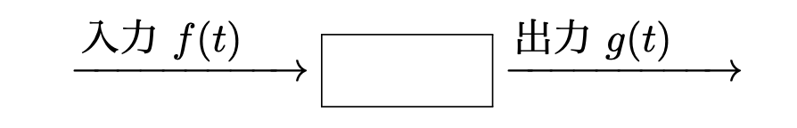
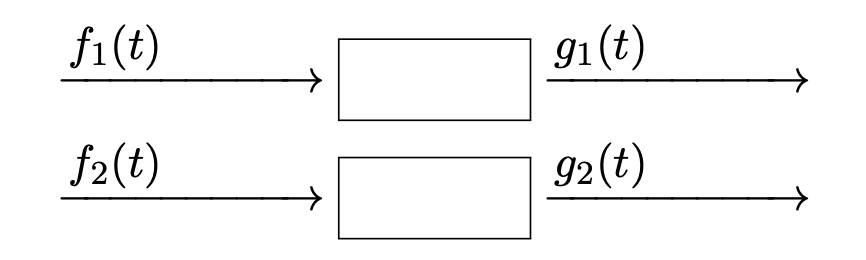
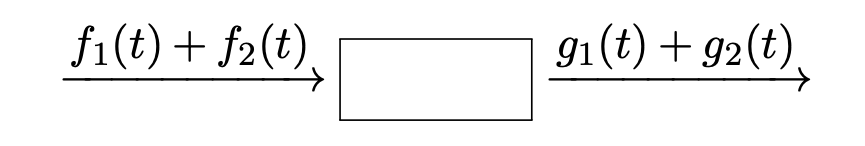
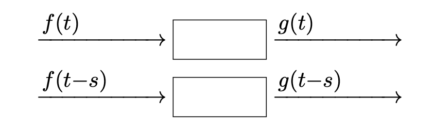

線形フィルタ回路
信号処理 - 第9講
(Press ? for help, n and p for next and previous slide)
前回のおさらい
フィルタ
定義
入力 \(f(t)\) を変換して出力 \(g(t)\) を生成する機構

線形性
定義
2つの入出力関係を考えたとき， 入力の線形結合がそのまま出力に反映される性質


時不変性
定義
入力の時刻が \(s\) ずれた場合，出力も \(s\) だけずれる性質
- 時間が経過してもフィルタの性質は変わらない

線形時不変フィルタの数学的表現
フィルタの積分表現
\begin{equation} g(t)=\int_{-\infty}^{\infty} f(s)h(t{-}s)ds \end{equation}インパルス応答
\begin{equation} h(t) =\int_{-\infty}^{\infty}\delta(s)h(t-s)ds =\int_{-\infty}^{\infty}h(s)\delta(t-s)ds \end{equation}- \(h(t)\) はフィルタに \(\delta(t)\) を入力した時の出力でもある
Fourier変換による表現
時間領域では畳み込み積分
\begin{equation} g(t) =\int_{-\infty}^{\infty}h(t-s)f(s)ds = h{*}f(t) \end{equation}周波数領域では関数の積
\begin{equation} \hat{g}(\omega) = \sqrt{2\pi}\cdot\hat{h}(\omega)\cdot\hat{f}(\omega) \end{equation}- フィルタの機能は周波数毎の振幅と位相の変換
因果的フィルタ
定義
\begin{equation} h(t)=0\;(t<0) \end{equation}- 時刻0にインパルスが入力される前には何も出力がされない
因果的フィルタの畳み込み
時刻 \(t\) での出力は 時刻 \(t\) 以前での入力のみにより定まる
\begin{equation} g(t)=\int_{-\infty}^{t}f(s)h(t-s)ds \end{equation}
演習
練習問題
- 以下の問に答えよ
- 関数 \(t e^{-\frac{t^2}{2}}\) を Fourier 変換せよ
- 関数 \(\Xi_{(-1,1)}(t)\) を Fourier 変換せよ
- 関数 \((\sin(\omega)/\omega)^{2}\) を 逆 Fourier 変換せよ
解答例
関数 \(t e^{-\frac{t^2}{2}}\) の Fourier 変換
\begin{equation} \mathcal{F}[f'](\omega) =i\omega\hat{f}(\omega),\quad \mathcal{F}^{-1}[\hat{f}'](t) =-itf(t) \end{equation}を利用すればよい
\begin{equation} t e^{-\frac{t^2}{2}} = (-e^{-\frac{t^2}{2}})' \end{equation}であるから
\begin{equation} \mathcal{F}[t e^{-\frac{t^2}{2}}](\omega) =-i\omega \mathcal{F}[e^{-\frac{t^2}{2}}](\omega) =-i\omega e^{-\frac{\omega^{2}}{2}} \end{equation}
関数 \(\Xi_{(-1,1)}(t)\) の Fourier 変換
\begin{equation} \mathcal{F}[\Xi_{(-1,1)}](\omega) = \sqrt{\frac{2}{\pi}}\frac{\sin(\omega)}{\omega} \end{equation}
関数 \((\sin(\omega)/\omega)^{2}\) の 逆 Fourier 変換
畳み込みを利用
\begin{equation} \mathcal{F}[h{*}f](\omega) =\sqrt{2\pi}\cdot\hat{h}(\omega)\cdot\hat{f}(\omega) \end{equation}\begin{align} \mathcal{F}^{-1}[\hat{f}^{2}](t) &=\frac{1}{\sqrt{2\pi}}f{*}f(t)\\ &=\frac{1}{\sqrt{2\pi}} \sqrt{\frac{\pi}{2}}^{2}\Xi_{(-1,1)}{*}\Xi_{(-1,1)}(t)\\ &=\sqrt{\frac{\pi}{8}}\Xi_{(-1,1)}{*}\Xi_{(-1,1)}(t) \end{align}
フィルタ回路
インパルス応答とは
\(\delta(t)\) を入力した時のフィルタ出力
\begin{equation} h(t) =\int_{-\infty}^{\infty}\delta(s)h(t-s)ds \end{equation}- 物理的には 面積1 (\(\Delta \times 1/\Delta\)) の矩形波に対する出力を 時間幅 \(\Delta\to0\) としたときの波形
2端子対回路

例題
- 以下の回路の時間領域での入出力関係を求めよ．
- 同じく周波数領域での入出力関係を求めよ．

解答
時間領域
\begin{equation} V_{out}(t) =\frac{R_{2}}{R_{1}+R_{2}}V_{in}(t) \end{equation}周波数領域
\begin{equation} \hat{V}_{out}(\omega) =\frac{R_{2}}{R_{1}+R_{2}}\hat{V}_{in}(\omega) \end{equation}- 同じ形になることに注意
演習
練習問題
- 以下の回路の時間領域での入出力関係を求めよ．
- 同じく周波数領域での入出力関係を求めよ．

解答例
時間領域
以下の微分方程式が成り立つ
\begin{align} V_{in}(t) &=RI(t)+V_{out}(t)\\ I(t) &=C\frac{d}{dt}V_{out}(t) \end{align}整理して
\begin{equation} V_{in}(t) =CR\frac{d}{dt}V_{out}(t) +V_{out}(t) \end{equation}
周波数領域
時間領域の結果を Fourier 変換して
\begin{equation} \hat{V}_{in}(\omega) =i\omega CR\hat{V}_{out}(\omega) +\hat{V}_{out}(\omega) \end{equation}入出力の関係を見直して
\begin{equation} \hat{V}_{out}(\omega) = \frac{1}{i\omega CR+1} \hat{V}_{in}(\omega) \end{equation}
フィルタとしての関係
\begin{equation} \hat{g}(\omega) = \sqrt{2\pi}\cdot\hat{h}(\omega)\cdot\hat{f}(\omega) \end{equation}と比較して
\begin{align} \hat{f}(\omega) &=\hat{V}_{in}(\omega)\\ \hat{g}(\omega) &=\hat{V}_{out}(\omega)\\ \sqrt{2\pi}\cdot\hat{h}(\omega) &=\frac{1}{i\omega CR+1} =\frac{1}{iCR}\frac{1}{\omega -i/CR} \end{align}- 周波数依存性について考察せよ
逆 Fourier 変換を用いた解析
インパルス応答
逆 Fourier 変換
式を見易くするため \(a=1/CR\) とおく
\begin{align} h(t) &=\mathcal{F}^{-1}[\hat{h}](t)\\ &=\frac{1}{\sqrt{2\pi}}\int_{-\infty}^{\infty} \hat{h}(\omega)e^{i\omega t}d\omega\\ &=\frac{a}{2\pi i}\int_{-\infty}^{\infty} \frac{e^{i\omega t}}{\omega-ia}d\omega \end{align}
- 複素積分の積分路
- \(t>0\) のとき， \(ia\) を囲む上半平面
- \(t<0\) のとき， 下半平面

留数定理
積分路が孤立特異点 \(c\) を含むとき以下が成り立つ
\begin{equation} \frac{1}{2\pi i}\oint f(z)dz =\mathrm{Res}_{z=c}f(z) =\lim_{z\to c}(z-c)f(z) \end{equation}計算結果
\begin{equation} h(t) = \begin{cases} a e^{-at}=\frac{1}{CR}e^{-\frac{t}{CR}},&t>0\\ 0,&t<0 \end{cases} \end{equation}
演習
練習問題
- 矩形波の入力に対して微分方程式を直接解き， その極限からインパルス応答を求めよ．

解答例
\(0 < t \le \Delta\)
\begin{equation} \frac{1}{\Delta} =CR\frac{d}{dt}V_{out}(t) +V_{out}(t) \end{equation}\(U(t)=V_{out}(t)-1/\Delta\) と置くと
\begin{equation} \frac{d}{dt}U(t)=-\frac{1}{CR}U(t) \end{equation}よって
\begin{equation} V_{out}(t)=a e^{-\frac{t}{CR}}+\frac{1}{\Delta} \end{equation}
初期条件 \(V_{out}(0)=0\)
\begin{equation} 0=a+\frac{1}{\Delta} \end{equation}よって
\begin{equation} V_{out}(t)=\frac{1}{\Delta}(1-e^{-\frac{t}{CR}}) \end{equation}
\(\Delta < t\)
\begin{equation} 0 =CR\frac{d}{dt}V_{out}(t) +V_{out}(t) \end{equation}よって
\begin{equation} V_{out}(t)=a e^{-\frac{1}{CR}} \end{equation}
初期条件 \(V_{out}(\Delta)=1/\Delta\cdot(1-e^{-\frac{\Delta}{CR}})\)
\begin{equation} \frac{1}{\Delta}(1-e^{-\frac{\Delta}{CR}}) =a e^{-\frac{\Delta}{CR}} \end{equation}よって
\begin{equation} V_{out}(t)=\frac{1}{\Delta}(e^{\frac{\Delta}{CR}}-1)e^{-\frac{t}{CR}} \end{equation}
\(\Delta\to 0\)
\begin{equation} \lim_{\Delta\to0} \frac{1}{\Delta}(e^{\frac{\Delta}{CR}}-1) =\frac{1}{CR} \end{equation}よって
\begin{equation} V_{out}(t)=\frac{1}{CR}e^{-\frac{t}{CR}}\quad(t>0) \end{equation}
今回のまとめ
- 線形フィルタ回路
- 時間領域での表現(微分方程式)
- 周波数領域での表現(関数の積)
- フィルタの周波数特性
- インパルス応答の求め方
注意
- 確認テスト (講義10の中)
- Fourier 変換の基本的な問題
- 手を動かしてしっかり計算すること
- 順逆の関係を上手く利用すること
- 試験の意味を考えて誠実な対応をすること
- ネットワーク環境等には自身で配慮すること
- Fourier 変換の基本的な問題